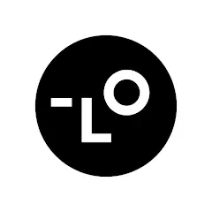
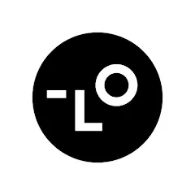

Lovart.ai
Lovart.ai es una pàgina web basada en la IA de google Nano Banana, no obstant millora de manera significativa la propia IA de google, ja que implementa millores a partir d'altres IA's utilitzant l'anomenat "Machine Learning."
Lovart.ai es una pàgina web basada en la IA de google Nano Banana, no obstant millora de manera significativa la propia IA de google, ja que implementa millores a partir d'altres IA's utilitzant l'anomenat "Machine Learning."
Chat GPT es una pàgina web desenvolupada per l'organització sense ànim de lucre "OpenAI." Aquesta IA es la més famosa, ajudant a escriure textos, ajudant amb receptes a la cuina o amb la programació; les possibilitats son casi infinites.
Grok és una IA creada per l'equip d'Elon Musk,"xAI." disenyada per a «respondre preguntes amb una mica d'enginy» i amb «una vena rebel»